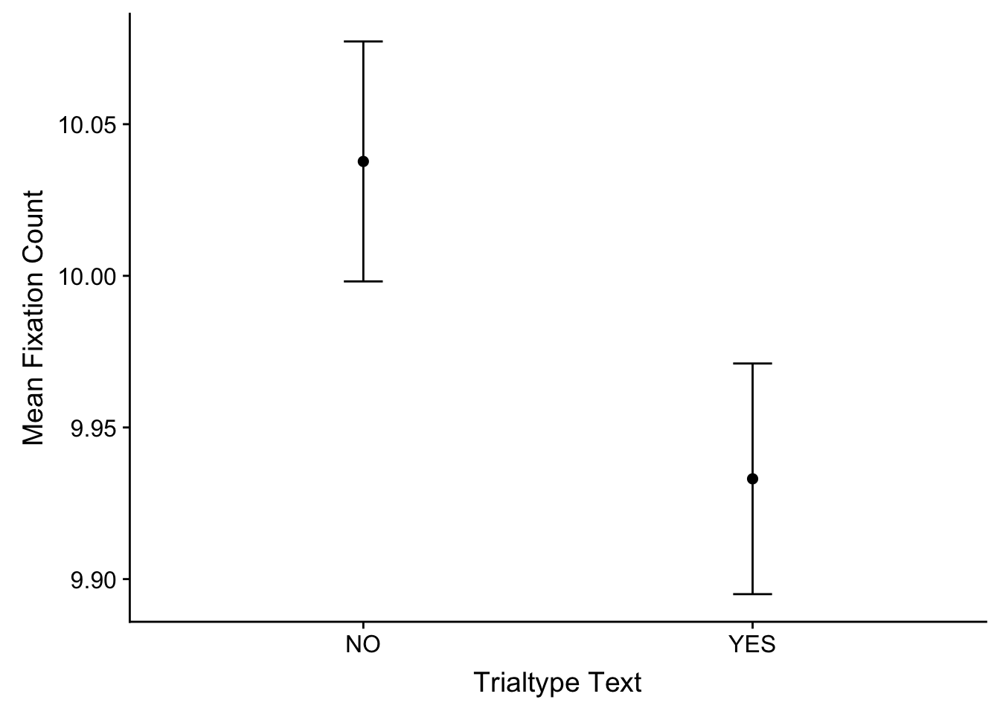

Chapter 5 Analyse Functions Walkthrough
The walkthrough here assumes you’re familiar with the basics of eye-tracking and output from DataViewer, and also assumes you’ve gone through the previous section on the organise functions as well.
The analyse functions are more indpendent from one another than the organise functions, so this section is going to be much briefer. Unlike the organise functions, the analyse functions can be run in any order you want, and of course, don’t have to be run if you aren’t interested in the dependent variables that they calculate for you.
For the most part, these are intended as generic helper functions, and your own analyses may well end up being much more specific. The good news, however, is that these functions are built on the same basic input and output structure, so we’ll start with what that is to give us a foundation.
5.1 Input Structure
The analyse functions all have the same basic structure, which is:
That’s the basic structure of the functions. Let’s go through the components: * The name is always analyse.X.X, wiht the X.X replaced with the specific measure that is calcualted * fixreport_df is the name of your input fixation report * aggregation_column_list is a list of columns that you want to group/aggregate your data by, such as TRIALTYPE_TEXT in our example fixation report that we’ve been working on * spss can be set to TRUE or FALSE. By default its set to FALSE. If you set it to TRUE, it will return the output in a wide format, ready for SPSS (see here for more info). * prefixLabel is only needed in some rare cases so I would avoid doing anything with it.
The simple summary we can give here is that, to use any of the analyse functions, you need to give the functions a fixation report, and then tell the functions which columns to group or aggregate the data by. Let’s move on to what the analyse functions give back to you when you’ve run them.
5.2 Output Structure
To talk about what each analyse function gives you, let’s look at one example - here, we’re using the analyse.fix.count function, which gives us the mean number of fixations per trial.
If you look at fixCounts, you’ll see this is actually a list of three data.tables. They are as follows: * fixCounts\(byTrial - data.table of the fixation count for every trial, broken down for each participant, and also by the aggregation_column_list variables * fixCounts\)byppt - data.table of the mean fixation count for every participant, and also by the aggregation_column_list variables * fixCounts$graphs - data.table of the mean fixation count for the different aggregation_column_list variables
Let’s inspect each on in turn now. First, fixCounts$byTrial - this should be pretty self-explanatory:
Next is fixCounts$byppt - again, this is the same thing except now it’s averaged by participant and by the aggregation_column_list columns only:
| RECORDING_SESSION_LABEL | TRIALTYPE_TEXT | MEAN_FIX_COUNT |
|---|---|---|
| 1 | YES | 9.835341 |
| 1 | NO | 9.852590 |
| 2 | YES | 10.076305 |
| 2 | NO | 10.274900 |
| 3 | YES | 9.670683 |
| 3 | NO | 9.968127 |
Finally is fixCounts$graphs, which provide means and SEs ready for putting into graphs:
| TRIALTYPE_TEXT | AVERAGE | SE |
|---|---|---|
| YES | 9.933066 | 0.0380288 |
| NO | 10.037716 | 0.0395597 |
Let’s get an example graph put together. My preference is to use ggplot2 in combination with the cowplot package for ready-made APA formatting:
library(ggplot2)
library(cowplot)
ggplot(fixCounts$graphs)+
aes(x=TRIALTYPE_TEXT, y=AVERAGE)+
geom_point(size=2)+
scale_y_continuous('Mean Fixation Count')+
scale_x_discrete('Trialtype Text')+
geom_errorbar(aes(ymin=AVERAGE-SE, ymax=AVERAGE+SE), width=0.1)
5.3 Understanding the Analyse Approach
You might be thinking to yourself something along the lines of ‘hey, how come we get by-trial and then by-participant means?’ The answer to this is simple: it’s how I put my means together. I’ll be honest here and say that when I first started learning eye-tracking, taking the mean of some means seemed weird to me. How come it’s best to take a by-trial mean followed by a by-participant mean?
To explain this more clearly, let’s look at a different measure such as fixation durations. If we simply took the mean of the CURRENT_FIX_DURATION column in our fixation report, why isn’t that going to give us the correct mean? The simple answer is that, if you do things in that manner, then you’re going to have a very imbalanced mean come out from your calculations. This is because some trials have more fixations than others - sometimes, many more fixatios. As a consequence, if you don’t average down to the by-trial means first, you’ll be allowing the trials with a lot of fixations to contribute more to the final mean than those with only a few fixations. By calculating the by-trial means first, you permit each trial to contribute equally to the final mean that goes into your analyses.
In addition, this sort of issue is made more pressing by the existence of coarse-to-fine effects in eye movement behaviour, which have mostly been studied in visual search tasks (Godwin, Reichle, and Menneer 2014; Over et al. 2007). As a trial goes on, fixations tend to get longer in duration while saccades get shorter - hence the term ‘coarse-to-fine’: at the start of a trial, fixations are short and dispersed (coarse), but towards the end of a trial, fixations are longer and closer together (fine). Again, a consequence of this is that it could lead to an imlabance in your means if you don’t take the by-trial means first.
5.4 Participants
By default, the analyse functions, as you may have seen, group your data in terms of a column called RECORDING_SESSION_LABEL. This column refers to the session name if you use Experiment Builder. Usually, this one is unique for each participant, which is why the analyse functions automatically assume that RECORDING_SESSION_LABEL is unique for each participant. If you participants took part in more than one session, you’ll need to re-organise your data before feeding the data to these functions.
5.5 List of Analyse Functions
Here is a list of the analyse functions currently available:
- Fixation count - mean number of fixations
- Fix duration - mean fixation duration
- Total time - mean total fixation time
- Saccade amplitude - mean saccade amplitude
- Visit count - mean number of visits to interest areas
Ferreira, Fernanda, Jens Apel, and John M. Henderson. 2008. “Taking a New Look at Looking at Nothing.” Trends in Cognitive Sciences 12 (11): 405–10. https://doi.org/https://doi.org/10.1016/j.tics.2008.07.007.
Godwin, H J, V Benson, and D Drieghe. 2013. “Using interrupted visual displays to explore the capacity, time course, and format of fixation plans during visual search.” Journal of Experimental Psychology. Human Perception and Performance 39 (6): 1700–1712. https://doi.org/10.1037/a0032287.
Godwin, H J, T Menneer, C A Riggs, K R Cave, and N Donnelly. 2015. “Perceptual Failures in the Selection and Identification of Low-Prevalence Targets in Relative Prevalence Visual Search.” Attention, Perception & Psychophysics 77 (1): 150–9. https://doi.org/10.3758/s13414-014-0762-8.
Godwin, H J, E D Reichle, and T Menneer. 2014. “Coarse-to-fine eye movement behavior during visual search.” Psychonomic Bulletin & Review 21 (5): 1244–9. https://doi.org/10.3758/s13423-014-0613-6.
Over, E A B, I T C Hooge, B N S Vlaskamp, and C J Erkelens. 2007. “Coarse-to-fine eye movement strategy in visual search.” Vision Research 47 (17): 2272–80. https://doi.org/10.1016/j.visres.2007.05.002.
References
Godwin, H J, E D Reichle, and T Menneer. 2014. “Coarse-to-fine eye movement behavior during visual search.” Psychonomic Bulletin & Review 21 (5): 1244–9. https://doi.org/10.3758/s13423-014-0613-6.
Over, E A B, I T C Hooge, B N S Vlaskamp, and C J Erkelens. 2007. “Coarse-to-fine eye movement strategy in visual search.” Vision Research 47 (17): 2272–80. https://doi.org/10.1016/j.visres.2007.05.002.